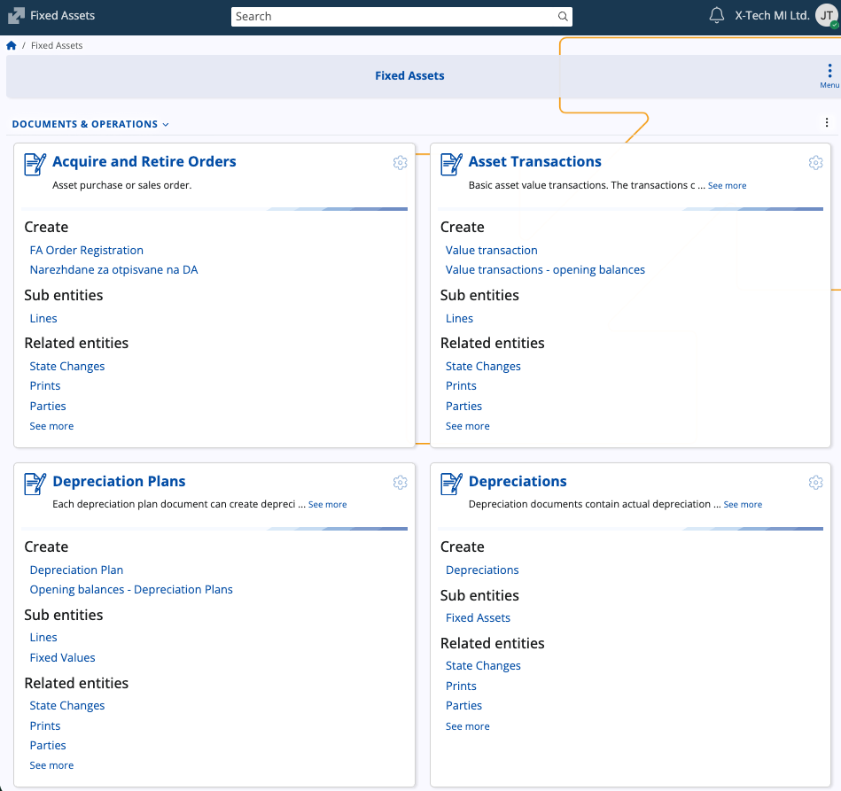

Fixed assets
Fixed assets are tangible resources recorded for long-term use in the operations of an enterprise and are expected to provide economic benefits over multiple accounting periods.
In ERP.net, the Fixed Assets submodule is responsible for managing the full lifecycle of an enterprise's tangible long-term assets — from acquisition and capitalization to valuation, depreciation, and retirement.
It ensures compliance with both accounting and tax requirements by maintaining separate valuation models and automating the calculation of depreciation according to the selected methods.

Structure
The page provides documents for registering and processing asset events, together with master data definitions and configuration elements that determine valuation and depreciation logic.
Documents and Operations
| Document / Operation | Purpose |
|---|---|
| Acquire and Retire Orders | Used to record asset acquisitions or retirements (disposals). These orders initiate the purchase or sale of fixed assets and manage related operational details. |
| Asset Transactions | Records value changes of assets such as capitalization, revaluation, impairment, or transfers between valuation models. Can also include opening balance entries. |
| Depreciation Plans | Defines the planned depreciation schedule for assets within a specified period or valuation model. Each plan can generate multiple depreciation documents. |
| Depreciations | Performs the actual depreciation calculation and posting for a financial period based on the rules defined in the selected Depreciation Method and Valuation Model. |
Definitions
| Definition | Purpose |
|---|---|
| Fixed Assets | The master records representing individual tangible assets. Each record includes its category, valuation model, currency, purchase and deployment dates, and current status. |
| Asset Groups | Logical groupings of assets defined by the user for reporting, management, or internal classification purposes. |
Setup
| Setup | Purpose |
|---|---|
| Asset Categories | Classifies assets by type (e.g., Motor Vehicles, Computers, Software, Machinery) and associates each category with the appropriate product type. |
| Depreciation Methods | Defines the calculation logic for asset depreciation. Can be system-defined (e.g., Straight Line, User Defined with Table) or user-defined, and specifies period and function parameters. |
| Valuation Models | Represents the frameworks for asset valuation, such as Accounting or Taxation. Each asset may maintain multiple valuations simultaneously, with depreciation and transactions linked to the corresponding model. |
Note
The screenshots taken for this article are from v.26 of the platform.